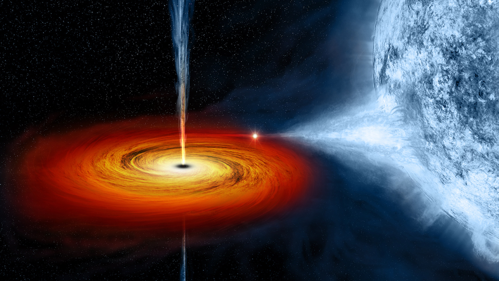

Websites
GIZMODO
Black Holes May Be Way More Murderous Than We Realized

Don’t get me wrong, black holes are cool but they’re also giant voids of terror: These gravitational abysses have been known to snack on stars in occurrences called Tidal Disruption Events (TDEs). It’s always the same horror story—an unsuspecting star wanders too close to a black hole, only to get ripped apart by the black hole’s gravity. Isn’t space pleasant?
YouTube
NASA & TRAPPIST-1: A Treasure Trove of Planets Found
Seven Earth-sized planets have been observed by NASA's Spitzer Space Telescope around a tiny, nearby, ultra-cool dwarf star called TRAPPIST-1. Three of these planets are firmly in the habitable zone. Over 21 days, NASA's Spitzer Space Telescope measured the drop in light as each planet passed in front of the star. Spitzer was able to identify a total of seven rocky worlds, including three in the habitable zone, where liquid water might be found. The video features interviews with Sean Carey, manager of the Spitzer Science Center, Caltech/IPAC; Nikole Lewis, James Webb Space Telescope project scientist, Space Telescope Science Institute; and Michaël Gillon, principal investigator, TRAPPIST, University of Liege, Belgium. The system has been revealed through observations from NASA's Spitzer Space Telescope and the ground- based TRAPPIST (TRAnsiting Planets and PlanetesImals Small Telescope) telescope, as well as other ground -based observatories. The system was named for the TRAPPIST telescope.